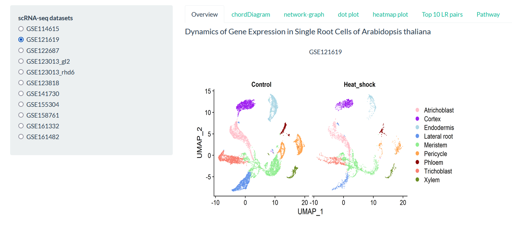
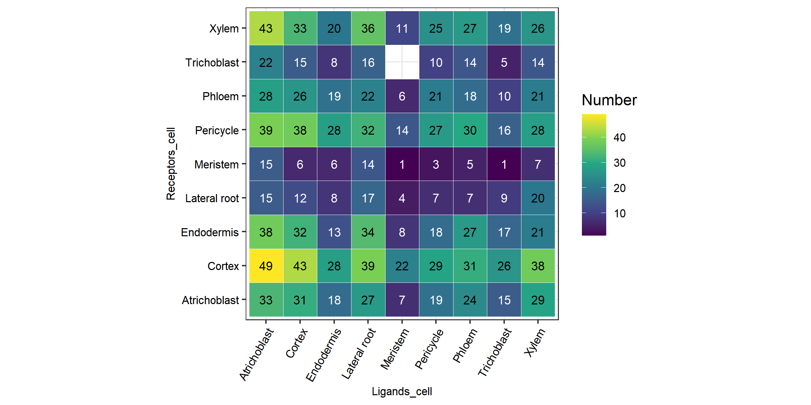
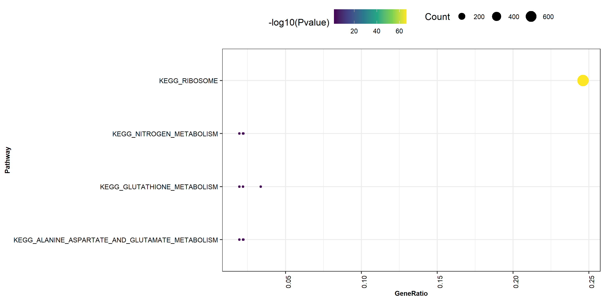

Explorer¶
A detailed exploration of the cell-cell communication for a given scRNA-seq dataset.
{kind=link}
Overview¶
For example, to explore how cells communicate in plants under heat shock stress, the processed scRNA-seq dataset (GSE121619) was used as input of PlantPhoneDB, which contains 15,729 cells involving 9 cell types, namely Pericycle cells, Lateral root cells, Trichoblast cells, Cortex cells, Endodermis cells, Meristem cells, Phloem cells, Atrichoblast cells and Xylem cells.

The cell-cell communication network for the GSE121619 dataset using three different visualisations—circos plot, network graph, and heatmap.
chordDiagram¶
PlantPhoneDB identified a total of 1,640 (including 853 experimental and 787 predicted ligand-receptor pairs) significant ligand-receptor pairs between pairwise cell types, including 1,457 paracrine ligand-receptor pairs and 183 autocrine ligand-receptor pairs.


network-graph¶
Different number of interactions among different cell types could be visualized using network-graph view.

heatmap plot¶
In particular, 49 significant ligand-receptor pairs were detected for communication of Atrichoblast and Cortex cells, which highlighted the importance of Atrichoblast-Cortex cell pair in response to heat-shock stress.
dot plot¶
In order to further explore the interaction relationships between cell types, we need to study the specific ligand-receptor interactions between different cell types and which ligand-receptor interactions are significantly enriched in the certain cell-cell pairs.

The dot plot shows the average expression level and significance of ligand-receptor interactions across cell types.
Top 10 LR pairs¶
Herein, we focused on top 10 ligand-receptor pairs ranked by score, which may play leading roles in cell-cell communication. Notably, some ligand-receptor pairs were detected in most of cell-cell pairs, such as AT3G53230-AT3G09840, AT3G53230-AT5G12110 and AT4G12420-AT2G45960, however, other ligand-receptor pairs were specific to cell-cell pairs, such as AT4G15800-AT1G55330 and AT4G15800-AT3G13520 are specific in Atrichoblast-Endodermis pair, implied different regulatory mechanisms of various ligand-receptor pairs.

Pathway¶
We constructed an internal signaling network regulated by each ligand-receptor pair for Atrichoblast-Cortex cell pair. Pathway analysis result showed that AT1G28290-AT2G14890 pair (FDR = 3.77×10-64) was mainly involved in ribosome pathway (ath03010).
Intriguingly, previous study supported that heat stress would give rise in ribosome pausing phenomenon in Arabidopsis thaliana (Merret et al., 2015).